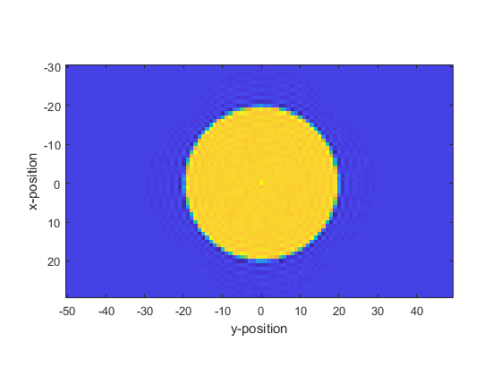

offGridDisc
Generate a non-binary mask for a disc source on a 2D/3D grid
Syntax
mask = offGridDisc(kgrid, centre, radius)
mask = offGridDisc(kgrid, centre, radius, orientation)
mask = offGridDisc(kgrid, centre, radius, [], plot_disc)
mask = offGridDisc(kgrid, centre, radius, orientation, plot_disc)
Description
offGridDisc computes a non-binary mask for implementing a disc source in 2D or 3D simulations. It evenly samples the disc using Fermat's spiral, and for each sample point computes a band-limited interpolant corresponding to a point source at that location. These point source responses are summed and scaled to give the source mask.
Examples
Nx = 60;
Ny = 100;
dx = 1;
dy = dx;
kgrid = kWaveGrid(Nx, dx, Ny, dy);
centre = [0, 0];
radius = 20;
orientation = [];
plot_disc = true;
mask = offGridDisc(kgrid, centre, radius, orientation, plot_disc);
imagesc(kgrid.y_vec, kgrid.x_vec, mask)
ylabel('x-position')
xlabel('y-position')
axis image

Inputs
kgrid |
k-space grid structure returned by makeGrid containing Cartesian and k-space grid fields |
centre |
centre of the disc given as a row vector [m] |
radius |
radius of the disc [m] |
Optional Inputs
orientation |
orientation of the disc given as a row vector [m] (default = []) |
plot_disc |
boolean controlling whether the disc sampling points are plotted (default = false) |
Outputs
mask |
2D/3D non-binary source mask for a disc |
See Also
makeDisc